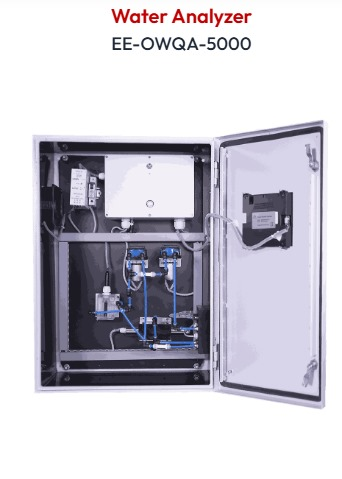

Water Quality Analyser
Water Analyzer from ADR Electrical & Automation which is designed to provide precise water quality monitoring. Large-scale data storage and automatic zero calibration guarantee reliable accuracy with little maintenance. Covers multiple physiochemical parameters like conductivity, pH, and chlorine.
Key Features
- Analytics by UV-Visible spectroscopy method
- Measures COD, BOD, pH, TSS, Chlorine
- Additional probes for ORP, turbidity, conductivity
- Auto zero cleaning system; industrial-grade anti-clog design
- RS-485 analog output & real-time data
- Automatic cleaning & screen shutdown; TUV certified
- Data transfer: PDF/Excel reports; server upload to CPCB/SPCB
Specifications
| Material | Mild Steel with Powder Coat |
|---|---|
| Type | Wall mounted |
| Protection | IP65 |
| Display | 7" TFT color screen (LED backlight) |
| Weight | 30kg |
| Dimensions (HxWxD) | 700x500x250mm |
Sensor Specifications
| Type | Details |
|---|---|
| TDS | Range: 0–20g/L; Precision: -3%; Response: 15s |
| pH | Range: 0–14pH; Response: 15s; Temp: -20°C–80°C |
| Dissolved Oxygen (DO) | Range: 0–20mg/L; DO% Sat: 0–200%; Precision: -3% |
Applications
- Online air monitoring
- Industrial process & combustion monitoring
- Desulfurization & denitration process monitoring
- Cement plants, coal-fired boilers, incinerators
- CEMS integrators
Key Benefits of E&E Products
E&E Products deliver eco-friendly solutions that reduce emissions, improve energy efficiency, and minimize waste. Designed for sustainability, our products help create cleaner air, safer water, and a healthier planet. Embrace green manufacturing with E&E.
- Industry-leading sensor technology: Accurate, real-time data
- Powerful software platform: Actionable insights & seamless integration
